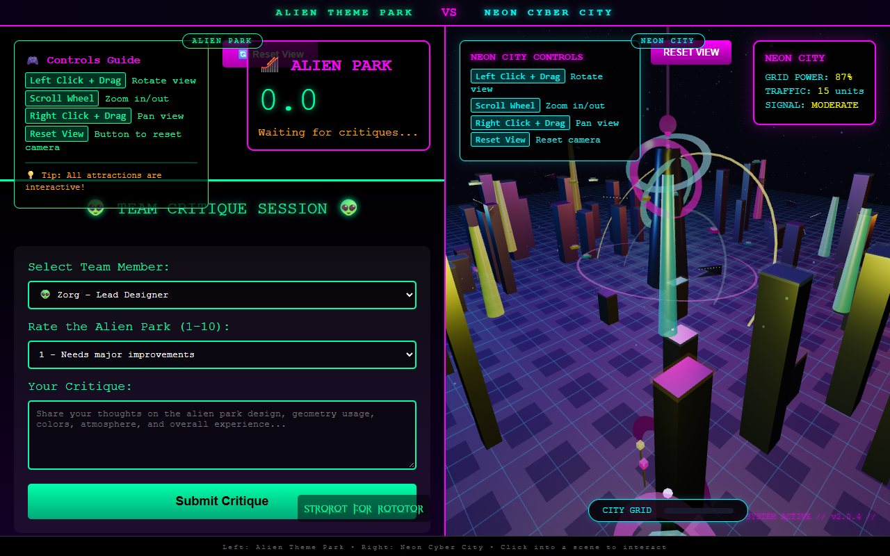

31.3 MB · 62 files
31.3 MB · 62 filesGenerational engine · Three.js + GLSL
Eiffel — Production
The main Eiffel experiment: source fragments, a build pipeline, diagnostics, performance probes, screenshot tooling, a self-contained dist build, and the iteration renders.
Source vault · F:\repod2 + F:\repotest2 + F:\repoai + F:\repopark
Four source trees behind the recovered experiments: Eiffel generation engines, bow labs, a hidden 747, GTA playgrounds, tarot HTML/JS, an alien park and a neon city. Batch 03 is HTML/JS only; batch 04 is HTML only.
Left out on purpose: all node_modules/ trees, the 266 MB _pdf/ library from batch 01, every research/ tree from batch 02, every asset and the autostudio Python environment from batch 03, and every asset from batch 04. Source code itself is intact where copied.
31.3 MB · 62 filesGenerational engine · Three.js + GLSL
The main Eiffel experiment: source fragments, a build pipeline, diagnostics, performance probes, screenshot tooling, a self-contained dist build, and the iteration renders.
 39.7 MB · 80 files
39.7 MB · 80 filesVariant lab · Three.js + GLSL
The second branch of the Eiffel generation: another source tree, a different build, comparison/profiling scripts, reference crops and a full set of test renders.
 13.5 MB · 57 files
13.5 MB · 57 filesIteration bench · Three.js
The zoomed-in workbench: crop, debug, tune and measure scripts, plus the render series used to calibrate the lattice. The entry shell is unfinished; the screenshots are the usable output.
 2.4 MB · 46 files
2.4 MB · 46 filesInteractive study · vendored Three.js
A cleaner, standalone 1:1 tower study with vendored Three.js, build tools and preview renders. Runs offline from its own folder.
 Three files
Three filesGame source · Three.js
A tiny complete game source folder: one module, one stylesheet, one shell. The whole thing is 20 KB and runs straight from the browser.
 5.1 MB · 78 files
5.1 MB · 78 filesReference & research · raw material
The inputs behind the Eiffel work: a ten-step construction tutorial, historical plates, and 67 research text extracts on the tower, the Champ de Mars and Paris.
Batch 02 · F:\repotest2
509 files / 144 MB copied from a 1.26 GB folder. Four Eiffel stages, a complete bow workshop, crossbows, a bicycle-riding pelican, a controller study and the hidden 747. Model pages, source, tools, vendor files and render outputs are here; the bulk research trees are not.
 bow workshop
bow workshopArchery · workbench + labs
ATF-X parts workbench, Bow Lab mechanics, Olympic recurve, recurve geometry and the Mathews compound build — model pages and their modules.
 4 stages
4 stagesEiffel · four builds
The 3js, v2, v3 and v4 Eiffel builds — model pages, source fragments, vendor trees and the stage findings. The raw research libraries stay behind.
 objects & hidden
objects & hiddenObjects · render-only + hidden
The controller study with its Blender builds, the pelican bicycle and the do_not_look 747 — including its verification screenshot set and vendor copy of Three.js.
Batch 03 · F:\repoai
Thirteen files / 383 KB, copied with no stylesheets, images, fonts, model assets or Python environment. Two GTA playgrounds and two tarot experiments — thin source fragments for the record.
 gta · html + js
gta · html + jsOpen world · two builds
The single-file city demo and the larger clone's game.js + HTML shell. The clone's stylesheet was not part of the HTML/JS copy.
 tarot · html + js
tarot · html + jsTarot · angular shell + template
The built TarotGame shell and JavaScript, plus the card-viewer HTML template. There are no generated card images or Angular assets in this copy.
Batch 04 · F:\repopark
Three HTML files / 100 KB: a split-screen comparison, an alien theme park and a neon cyber city. The pages carry their own inline CSS and JavaScript; there are no copied assets.

html onlySplit screen · two parks
The comparison shell and both self-contained Three.js scenes. Each is a single HTML page with inline JavaScript; only the root index links them together.
← Return to The Model Room · Batch 01 → · Batch 02 → · Batch 03 → · Batch 04 →